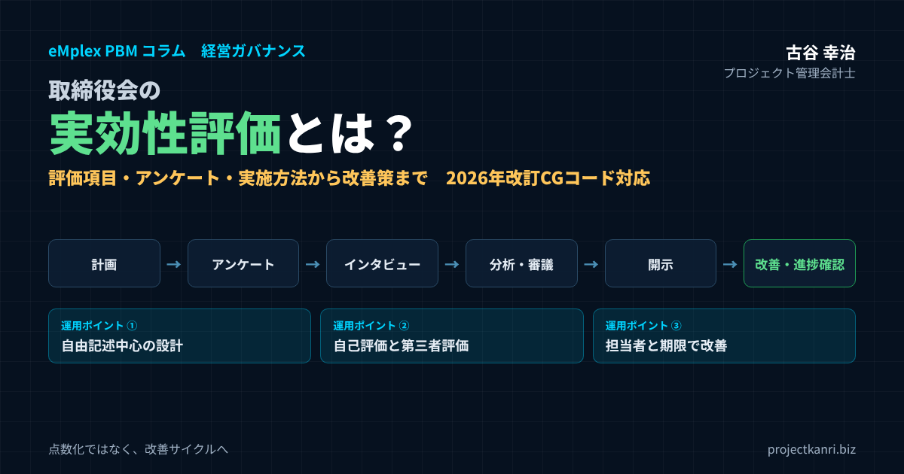

取締役会の実効性評価とは？形骸化させない3つの運用ポイント―評価項目・アンケート・実施方法・第三者評価・開示から改善策まで徹底解説（2026年改訂コーポレートガバナンス・コード対応）

結論：実効性評価の目的は「点数化」ではなく「改善サイクル」
この記事のポイント
- 取締役会の実効性評価の目的は、点数化ではなく改善サイクルを回すこと
- 2026年改訂のコーポレートガバナンス・コードでは、評価を通じた取締役会の機能向上がより明確に
- 運用ポイント①自由記述中心の設計と匿名性を保った論点整理
- 運用ポイント②自己評価と第三者評価の使い分け
- 運用ポイント③改善アクションに担当者と期限、次回冒頭で進捗確認
- 経営戦略との連動、KPI・予実管理に基づく意思決定の質、プロジェクト単位の情報開示の質を評価項目に
プロジェクト管理会計士の古谷です。上場企業や、上場を目指す企業の取締役会の運営をご支援していると、毎年アンケートを配って集計するだけの「実効性評価」に出会うことが少なくありません。
実効性評価というと、無記名のアンケートを集計して満足度のスコアを出す作業だと思われがちです。しかし本来の目的は、前回の評価で指摘された課題が実際に改善されたかを確認し、次の一年の運営方針に反映させる継続的なサイクルを回すことにあります。点数を出して終わりにしてしまうと、翌年また同じような結果が繰り返され、評価そのものが儀式化していきます。
本記事では、形骸化を防ぐための運用のポイントを、三つに整理してお伝えします。第一に、自由記述を中心にした評価の設計で、指摘の解像度を上げること。第二に、自己評価と第三者評価を使い分け、社内の力学から離れた視点を取り入れること。第三に、改善のアクションに担当者と期限をセットで定め、次回の評価の冒頭で進捗を確認することです。そのうえで、プロジェクト型ビジネスの会社にとって特に重要な、プロジェクト単位の情報開示の質を評価項目に含める考え方も紹介します。
取締役会の実効性評価とは
取締役会の実効性評価とは、取締役会が、その役割と責務を果たすために、どの程度機能しているかを、取締役会自身が分析し、評価する取り組みです。議事の運営、議題の設定、資料と情報の提供、議論の質、意思決定の質、監督の機能、取締役会の構成など、さまざまな観点から評価を行い、課題を洗い出し、改善につなげます。
| 項目 | 内容 |
|---|---|
| 目的 | 取締役会の機能の課題を見つけ、継続的に改善すること |
| 評価する主体 | 取締役会自身（各取締役・監査役の自己評価が基本。外部の第三者評価を組み合わせることも） |
| 主な評価の観点 | 構成、運営、議題設定、情報提供、議論の質、意思決定の質、監督機能、委員会の機能など |
| 主な手法 | アンケート、インタビュー、議事録・議題の分析、第三者による観察 |
| 結果の扱い | 取締役会で審議し、改善アクションを決定。上場企業は結果の概要を開示 |
実効性評価は、取締役会の通信簿ではありません。良い点数を取ることが目的ではなく、取締役会がより良く機能するための課題を見つけ、改善することが目的です。この点を取締役の全員が理解していなければ、評価は、互いに当たり障りのない回答を返すだけの形式的な作業になってしまいます。
実効性評価は、上場企業だけのものではありません。上場を目指す企業や、上場していない企業でも、取締役会や経営会議の運営を振り返り、改善する仕組みとして活用できます。とくに、上場の準備の段階では、取締役会が実際に機能していることを示すことが求められます。実効性評価は、その運用の実績を積み重ねる手段にもなります。
コーポレートガバナンス・コードでの位置づけ（2026年改訂）
上場企業にとって、取締役会の実効性評価は、東京証券取引所のコーポレートガバナンス・コードで求められている取り組みです。
改訂前のコードでは、補充原則4-11③で、取締役会は、毎年、各取締役の自己評価なども参考にしつつ、取締役会全体の実効性について分析・評価を行い、その結果の概要を開示すべきである、と定められていました。
コードは2026年7月に改訂され、補充原則が廃止されて、基本原則、原則、解釈指針の構成に整理されました。取締役会の実効性評価は、原則として位置づけられ、取締役会は、毎年、取締役会全体としての実効性に関する分析・評価を行い、その結果の概要を開示することなどにより、その機能の向上を図るべきである、という趣旨が示されています。評価を行うこと自体ではなく、評価を通じて取締役会の機能を向上させることが、より明確に求められるようになったと言えるでしょう。
| 改訂前 | 2026年7月改訂後 | |
|---|---|---|
| コードの構成 | 基本原則・原則・補充原則 | 基本原則・原則・解釈指針（補充原則は廃止） |
| 実効性評価の規定 | 補充原則4-11③ | 原則（実効性評価の原則として整理） |
| 求められる内容 | 毎年、各取締役の自己評価なども参考にしつつ、取締役会全体の実効性を分析・評価し、結果の概要を開示 | 毎年、取締役会全体の実効性を分析・評価し、結果の概要を開示することなどにより、機能の向上を図る |
| 評価の考え方 | — | 解釈指針で、取締役会がどのような機能を発揮すべきかを踏まえた評価が効果的との考え方を提示 |
条文の番号・文言の詳細は東京証券取引所が公表しているコード本文でご確認ください。
また、解釈指針では、実効性評価を実施するに際しては、取締役会として、自らの役割・責務を果たすためにどのような機能を発揮すべきかを踏まえた評価を行うことが効果的であるといった考え方が示されています。評価の手法としては、各取締役が自己および取締役会全体を評価することなどが例として挙げられています。
コードの適用の範囲は、市場の区分によって異なります。プライム市場とスタンダード市場の会社は基本原則と原則が、グロース市場の会社は基本原則が、コンプライ・オア・エクスプレインの対象とされています。改訂後のコードに基づくコーポレート・ガバナンスに関する報告書の提出の期限など、詳しい内容は、東京証券取引所が公表しているコードの本文と関連の資料で確認してください。
改訂の趣旨を実務に引き直すと、評価の結果を開示して終わりにするのではなく、評価から見えた課題に取り組み、取締役会の機能がどう向上したのかまでを説明できる状態をつくることが求められている、と私は受け止めています。これは、本記事でお伝えする改善サイクルの考え方そのものです。
なぜ多くの会社でアンケート結果が「総論賛成」になるのか
無記名のアンケートであっても、選択肢が「大いに機能している」から「あまり機能していない」までの5段階評価のような形式だと、回答者は無難な中間の選択肢を選びがちです。理由は、具体的な不満を書くと、誰が書いたか推測されるのではという心理的な抵抗があるためです。
| 理由 | 起きること | 対策の方向 |
|---|---|---|
| 回答者が特定されやすい | 少人数のため、具体的な不満を書きにくい | 事務局が論点を整理して報告、外部への集計委託 |
| 5段階評価の中間選択 | 無難な中間の選択肢に回答が集中 | 自由記述中心、4段階評価、理由欄の追加 |
| 質問が抽象的 | 「活発か」に「はい」と答えて終わる | 具体的な場面を問う質問に変更 |
| 結果が活かされない | 前年の指摘が変わらず、回答意欲が下がる | 改善アクションに担当者と期限、次回冒頭で確認 |
取締役の人数は、多くの会社で十人前後です。社外の取締役が二、三人という会社も少なくありません。人数が少ないほど、回答の内容から誰が書いたのかを推測しやすくなります。社外の取締役が、経営陣への率直な指摘を書きにくいと感じるのは、自然なことです。
もう一つの理由は、質問の設計です。「取締役会の議論は活発に行われているか」という質問に対して、「活発ではない」と答えるのは勇気がいります。抽象的な質問は、抽象的な回答しか生みません。どの議題で、どのような情報が足りず、どのような議論ができなかったのか。具体的な問いを立てなければ、改善につながる具体的な回答は得られません。
そして、評価の結果が、その後どう使われるのかが見えないことも、回答を形式的にします。前年に指摘したことが何も変わっていなければ、取締役は、今年も率直に書こうとは思わなくなります。評価の形骸化は、回答の段階だけでなく、評価の後の改善の段階の問題でもあるのです。
取締役会の実効性評価の方法：実施プロセスと手順
取締役会の実効性評価のやり方に、法令で決められた一つの正解があるわけではありません。ただし、多くの会社で採られている基本的な流れはあります。私は、次の七つの手順で考えることをおすすめしています。
| 手順 | 内容 | 主な担い手 |
|---|---|---|
| ① 評価の計画 | 前年の課題の確認、今年の重点、方法とスケジュールの決定 | 事務局・議長 |
| ② アンケート | 取締役・監査役の全員に評価項目に沿って実施 | 事務局（または外部） |
| ③ インタビュー | アンケートの背景を個別面談で確認 | 議長・筆頭独立社外取締役・外部 |
| ④ 集計・分析 | ばらつき・前年比・社内外の差を分析し課題を抽出 | 事務局（または外部） |
| ⑤ 取締役会での審議 | 分析結果を報告し、優先課題と改善策を決定 | 取締役会 |
| ⑥ 開示 | 評価の方法・結果の概要・課題と取り組みを開示 | 事務局・IR |
| ⑦ 改善と進捗確認 | 改善アクションを実行し、次回の評価の冒頭で進捗を確認 | 担当役員・取締役会 |
一つ目は、評価の計画です。今年の評価で何を確かめたいのか、前年の評価で挙がった課題は何だったのか、評価の方法とスケジュールをどうするのかを、取締役会の事務局が整理し、取締役会で確認します。評価の目的を最初に共有しておくことで、回答する側の姿勢も変わります。
二つ目は、アンケートの実施です。取締役と監査役の全員に、評価項目に沿ったアンケートを配ります。三つ目は、インタビューです。アンケートの回答だけでは読み取れない背景を、個別の面談で確認します。インタビューは、社外の取締役の率直な意見を引き出すうえで、とくに効果があります。
四つ目は、集計と分析です。回答の傾向を整理し、課題の候補を抽出します。五つ目は、取締役会での審議です。分析の結果を取締役会に報告し、どの課題を優先して取り組むのかを議論します。六つ目は、開示です。上場企業であれば、評価の結果の概要をコーポレート・ガバナンスに関する報告書などで開示します。七つ目は、改善の実行と進捗の確認です。改善のアクションを実行し、次の評価の冒頭でその進捗を確認します。
多くの会社で手薄になりがちなのは、一つ目の計画と、七つ目の進捗の確認です。アンケートを配って集計し、開示するところまでは毎年きちんと行っていても、前年の課題を踏まえて今年の評価を設計し、改善の結果を確かめるという、サイクルの入り口と出口が抜け落ちているのです。
評価の時期は、事業年度の終わりから定時株主総会の前後にかけて実施する会社が多いようです。一年間の取締役会の運営を振り返り、その結果を次の年度の運営に反映させるという流れを考えると、自然なタイミングです。ただし、決算の作業と重なる時期でもあるため、事務局の負担を見込んで、早めにスケジュールを組んでおくことが大切です。
取締役会の実効性評価の評価項目一覧とチェックリスト
評価項目の設計は、実効性評価の質を左右する最も重要な作業です。一般的には、次のような観点から評価項目を設けます。
| 評価領域 | 主な評価項目の例 |
|---|---|
| 構成 | 人数・社外取締役の比率、知識・経験・能力のバランス（スキルマトリックス）、多様性 |
| 運営 | 開催頻度・時間、資料の事前配布の時期、議事進行、議長の役割 |
| 議題設定 | 戦略の議論の時間、報告事項と審議事項のバランス、年間の議題計画 |
| 情報提供 | 資料の分かりやすさ、判断に必要な情報の有無、事前説明、現場を知る機会 |
| 議論の質 | 社外取締役の発言の機会、多様な意見の尊重、論点の明確さ |
| 意思決定の質 | 経営数値・KPIに基づく判断、リスクの検討、決議後のモニタリング |
| 監督機能 | 業績・予実のモニタリング、内部統制・リスク管理の監督、経営陣の評価 |
| 経営戦略 | 中長期計画・経営戦略の議論、資本コストを踏まえた議論、事業ポートフォリオ |
| 指名・報酬 | 後継者計画、指名・報酬委員会の機能、取締役会への報告 |
| 前年の課題 | 前年の改善アクションの実施状況と効果 |
この一覧は、毎年すべてを同じ重みで評価するためのものではありません。前年の評価で課題が挙がった領域や、今年の経営の重点と関係する領域を深く掘り下げ、それ以外の領域は簡潔に確認するといったメリハリをつけることで、回答する側の負担を抑えながら、評価の解像度を上げることができます。
評価項目を考えるときに、私が必ず確認するのは、その項目が取締役会の役割と結びついているかどうかです。取締役会の役割は、会社の戦略の大きな方向性を示すこと、経営陣が適切なリスクを取れる環境を整えること、そして経営陣を独立した立場から監督することにあります。議事の運営や資料の分かりやすさは大切ですが、それ自体が目的ではありません。戦略の議論や監督の機能を十分に果たすための手段として、評価する必要があります。
そのうえで、自社の取締役会が、今どの段階にあるのかを踏まえて項目を選ぶことも大切です。取締役会の運営の基本が整っていない段階では、開催の頻度や資料の事前の配布といった基本の項目を中心に評価します。基本が整った段階では、戦略の議論の深さや、意思決定の後のモニタリング、後継者の計画といった、より踏み込んだ項目に重点を移していきます。
取締役会の評価チェックリスト（簡易版）
評価項目の全体像とは別に、事務局が毎年の評価の前に確認しておきたい運営面のチェックリストを示します。アンケートの前に、事務局がこの項目を点検しておくだけでも、評価の議論の土台が整います。
| No. | チェック項目 |
|---|---|
| 1 | 年間の取締役会の議題計画が作成され、取締役に共有されている |
| 2 | 資料は原則として開催の数日前までに配布されている |
| 3 | 重要な議案は、決議の前に論点説明の場を設けている |
| 4 | 審議事項に十分な時間が確保され、報告事項は簡潔にしている |
| 5 | 中期経営計画の進捗を定期的に審議している |
| 6 | 予実の差異の原因と着地見通しが報告されている |
| 7 | 重要な投資の決議後、進捗のモニタリングが行われている |
| 8 | 社外取締役が事業の現場を知る機会が設けられている |
| 9 | 前年の評価の課題と改善アクションの進捗が整理されている |
| 10 | 議事録に審議の内容と主な意見が記録されている |
このチェックリストで「いいえ」が多い場合、アンケートを工夫する前に、取締役会の運営の基本を整えることが先決です。資料が前日に届く、議題が報告事項ばかりで審議の時間がない、前年の課題の進捗が誰にも分からない。こうした状態のままアンケートを実施しても、回答は、運営の基本への不満に集中し、戦略や監督の機能についての議論には至りません。
取締役会の実効性評価のアンケート例と質問例
アンケートは、選択式の質問と自由記述の質問を組み合わせて設計します。選択式の質問は、年ごとの変化を追いやすいという利点があります。自由記述の質問は、具体的な課題を引き出すことに向いています。
ここでは、私が実際の支援で使っている考え方をもとに、評価項目ごとの質問例を紹介します。抽象的な質問と、具体的な質問を並べてみると、違いが分かりやすいと思います。
| 領域 | 抽象的な質問 | 具体的な質問例 |
|---|---|---|
| 議論の質 | 取締役会の議論は活発ですか | 過去一年で、審議の時間が足りなかったと感じた議題はどれですか。その理由は何ですか |
| 情報提供 | 資料は分かりやすいですか | 判断に必要な情報が不足していた議案を挙げ、何があれば判断しやすかったかを書いてください |
| 経営戦略 | 戦略は十分に議論されていますか | 中期経営計画のうち、取締役会でもっと議論すべきだったテーマは何ですか |
| 意思決定 | 意思決定は適切ですか | 決議した投資のうち、決議後の進捗の報告が不十分だった案件はありますか |
| 監督機能 | 業績は適切に監督されていますか | 予実の差異について、原因と対策が分からないまま次の議題に移った場面はありましたか |
| 前年の課題 | 運営は改善されましたか | 前年の課題のうち、改善を実感できたもの、できなかったものはどれですか |
抽象的な質問は、「はい」か「いいえ」で答えられてしまいます。具体的な質問は、回答する人に、過去一年の取締役会の場面を思い出させます。どの議題のことを言っているのかが分かれば、事務局は、その議題の資料や時間の配分を見直すことができます。
自由記述の質問は、数を絞ることも大切です。十も二十も自由記述の欄があると、回答する人の負担が大きくなり、一つひとつの回答が短くなります。私は、評価の重点の領域について三つから五つ程度に絞り、そのかわりに、具体的な場面を書いてもらうようにお願いしています。
また、選択式の質問を使う場合も、5段階の中間の選択肢を設けない4段階にする、評価の理由を一言でも書いてもらう欄を添えるといった工夫で、無難な回答に流れることを防げます。アンケートのテンプレートを他社から借りてくるだけでは、自社の課題は見えてきません。前年の評価の結果と、今年の経営の重点を踏まえて、毎年、質問を見直すことが重要です。
自由記述の設計：質問は「場面」と「理由」をセットで聞く
自由記述の質問を設計するときに、私がいつもお伝えしているのは、場面と理由をセットで聞くということです。「改善すべき点を自由にお書きください」という質問では、回答する人は、何を書けばよいのか迷います。その結果、「特になし」や、一般的な感想が並びます。
そこで、「過去一年の取締役会で、もう少し時間をかけて議論すべきだったと感じた場面を一つ挙げてください」と、まず場面を思い出してもらいます。そのうえで、「なぜそう感じたのか、何があればより良い議論ができたと思うか」と、理由と改善の案を聞きます。場面が特定されていれば、事務局は、その議題の資料、説明の順番、時間の配分を具体的に見直すことができます。
もう一つの工夫は、良かった点も聞くことです。改善すべき点だけを聞くと、回答は批判に偏り、書く側も心理的な負担を感じます。「過去一年で、取締役会の議論が会社の判断を良い方向に変えたと感じた場面」を聞くと、取締役会がどのようなときに機能しているのかが分かります。良い場面の共通点を見つけることは、課題を見つけることと同じくらい、改善のヒントになります。
回答の期間にも配慮が必要です。回答の期限を一週間程度に設定すると、多くの取締役は期限の直前に短時間で回答します。二週間から三週間程度の期間を取り、途中で事務局から一度声をかけるだけでも、回答の量と質は変わります。社外の取締役は他の会社の役員も兼ねていることが多いため、他社の評価の時期と重ならないかにも気を配るとよいでしょう。
運用ポイント①：自由記述を中心に据え、事務局が匿名性を保って論点を整理する
形骸化を防ぐ一つ目の運用のポイントは、自由記述欄を中心に据え、事務局が匿名性を保ったまま論点を整理して役員会に報告する運用に変えることです。これだけで、指摘の解像度は大きく上がります。
大切なのは、回答の原文をそのまま取締役会に出さないことです。原文をそのまま出すと、言い回しや書きぶりから、誰が書いたのかが推測されてしまいます。事務局が、複数の回答を論点ごとにまとめ、表現を整えたうえで報告します。たとえば、「重要な投資の案件について、検討の初期の段階での情報の共有が不足しているという趣旨の指摘が、複数の取締役から挙がった」といった形です。
事務局を誰が担うのかも重要です。経営企画や総務の部門が担うことが多いのですが、事務局の担当者が、社長の直属で、社長の意向を強く受けている場合、取締役は、率直な回答が社長に筒抜けになるのではないかと考えます。事務局の独立性に不安がある場合は、回答の集計と整理を、社外の第三者に委ねるという方法もあります。
インタビューを組み合わせることも効果的です。アンケートで「資料が分かりにくい」と書かれていても、どの資料のどこが分かりにくいのかまでは分かりません。インタビューで具体的な場面を聞くことで、改善の打ち手が見えてきます。社外の取締役へのインタビューは、筆頭の独立社外取締役や、取締役会の議長が担う会社もあります。
運用ポイント②：自己評価と第三者評価を使い分ける
二つ目の運用のポイントは、自己評価と第三者評価を使い分けることです。毎年同じ形式の自己評価だけを繰り返していると、評価する側も評価される側も惰性に陥りやすくなります。数年に一度は外部の第三者機関やコンサルタントによる評価を組み合わせることで、社内の力学から離れた視点での指摘を得られます。
| 自己評価 | 第三者評価（外部評価） | |
|---|---|---|
| 実施者 | 取締役会・事務局 | 外部の第三者機関・コンサルタント・弁護士など |
| 頻度の目安 | 毎年 | 数年に一度（例：三年に一度、体制変更の節目） |
| 強み | 低コスト、経年での比較がしやすい | 社内の力学から離れた指摘、他社との比較の視点、率直な意見を引き出しやすい |
| 弱み | 惰性・遠慮が生まれやすい | 費用がかかる、受けること自体が目的化しやすい |
| 主な手法 | アンケート、議長によるインタビュー | アンケート設計・集計、個別インタビュー、取締役会への陪席・観察 |
私がこれまで200社を超える企業の経営管理を支援してきた中でも、第三者評価を導入した年は、それまで表面化しなかった議題設定や情報提供の課題が具体的に言語化される傾向がはっきり見られました。
第三者評価の形には、いくつかの段階があります。アンケートの設計と集計だけを外部に委ねる方法、外部の専門家がインタビューを行う方法、外部の専門家が取締役会に陪席して運営を観察する方法などです。外部に委ねる範囲が広いほど、費用はかかりますが、得られる示唆は深くなります。
頻度については、毎年の自己評価を基本としながら、三年に一度程度、第三者評価を取り入れるという考え方が、実務では採りやすいと思います。取締役の構成が大きく変わった年、経営の体制が変わった年、中期経営計画を策定する年など、取締役会の役割を見直す節目に合わせて第三者評価を実施するのも一つの方法です。
注意したいのは、第三者評価を受けること自体を目的にしないことです。外部の評価を受けたという事実だけでは、取締役会は良くなりません。外部の評価で挙がった指摘を、自社の取締役会でどう受け止め、どう改善につなげるのか。その議論が伴ってはじめて、第三者評価は意味を持ちます。
外部の評価者を選ぶときは、ガバナンスの制度の知識だけでなく、その会社の事業と経営管理の実務を理解できるかどうかを確認することをおすすめします。制度の観点からの指摘は、どの会社にも当てはまる一般論になりがちです。事業の特性や、取締役会に上がってくる数字の作られ方まで踏み込んで理解している評価者であれば、議題の設定や情報の提供について、より具体的な改善の提案が期待できます。また、評価者が、会社と別の取引関係を持っていないかといった、独立性の確認も欠かせません。
運用ポイント③：改善アクションは担当者と期限をセットで定め、次回の冒頭で確認する
三つ目の運用のポイントは、改善のアクションに、担当者と期限をセットで定めることです。評価結果から課題を洗い出しても、誰がいつまでに何をするかを決めなければ、翌年また同じ指摘が繰り返されます。改善アクションには必ず担当役員と実施期限を明記し、次回の評価の冒頭で進捗を確認する運用にすることが重要です。
| 課題 | 改善アクション | 担当 | 期限 | 確認方法 |
|---|---|---|---|---|
| 戦略の議論の時間が不足 | 四半期ごとに中期計画の進捗審議に60分を確保 | 経営企画担当役員 | 次の四半期 | 年間議題の時間配分の集計 |
| 重要投資の情報共有が遅い | 決議の1か月前に論点説明の場を設ける | CFO | 上期中 | 対象案件の実施記録 |
| 決議後のモニタリング不足 | 主要投資の計画対実績を半期ごとに報告 | CFO・事業担当役員 | 下期から | 取締役会の議事録 |
| 資料の配布が直前 | 資料の配布を原則として開催の3営業日前に | 取締役会事務局 | 翌月から | 配布日の記録 |
担当者・期限は架空の記入例です。
この一手間を省いた会社ほど、実効性評価そのものへの役員の関心が年々薄れていく傾向を、これまでの支援の現場で数多く見てきました。
改善のアクションは、具体的に書くことが大切です。「議論の活性化を図る」というアクションでは、何をすれば達成したことになるのかが分かりません。「中期経営計画の進捗の審議に、四半期ごとに六十分の時間を確保する」「重要な投資の案件は、決議の一か月前に論点の説明の場を設ける」というように、実行したかどうかが確認できる形で定めます。
そして、次の評価の冒頭で、前年のアクションの進捗を確認します。できたこと、できなかったこと、その理由。この振り返りが、今年の評価の出発点になります。前年の課題を確認せずに新しいアンケートを始めると、評価は毎年リセットされ、改善の積み重ねが生まれません。
可能であれば、評価の時期だけでなく、年の途中にも進捗を確認する場を設けることをおすすめします。年に一度の評価だけでは、改善のアクションは、評価の直前に慌てて手をつけるものになりがちです。半期に一度、取締役会の議題の一つとして、改善の進捗を数分でも確認するだけで、アクションの実行の度合いは大きく変わります。
評価結果の集計・分析と課題の抽出
アンケートとインタビューの結果を集めたら、集計と分析を行います。ここで大切なのは、平均の点数を出すことよりも、回答のばらつきと、前年からの変化を見ることです。
たとえば、ある項目の平均の点数が高くても、社内の取締役は高く評価し、社外の取締役は低く評価しているという場合、そこには、情報の非対称性という課題が隠れている可能性があります。社内の取締役は日頃から情報に触れているので、取締役会の資料が少なくても困りません。しかし、社外の取締役にとっては、判断の材料が足りないのです。
| 分析の視点 | 見るポイント | 読み取れる課題の例 |
|---|---|---|
| ばらつき | 回答の分布、極端な回答の有無 | 一部の取締役だけが強い問題意識を持っている |
| 社内と社外の差 | 社内取締役と社外取締役の評価の差 | 情報の非対称性、社外への情報提供の不足 |
| 前年からの変化 | 改善アクションを実行した項目の評価の変化 | アクションの効果、新たに生じた課題 |
| 自由記述の論点 | 複数の回答者に共通する論点 | 優先的に取り組むべき課題 |
前年からの変化を見ることも大切です。前年に課題として挙げ、改善のアクションを実行した項目の評価が上がっていれば、その改善が機能したことになります。上がっていなければ、アクションの中身を見直す必要があります。逆に、前年は問題がなかった項目の評価が下がっていれば、新しい課題が生まれている兆しかもしれません。
課題を抽出したら、すべてに一度に取り組もうとせず、優先順位をつけます。取締役会の役割にとって重要度が高く、改善の効果が大きい課題から取り組みます。毎年、三つ程度の重点の課題に絞ることで、改善のアクションの実行の度合いが上がります。
評価結果の開示の書き方と開示事例の傾向
上場企業は、評価の結果の概要を開示することが求められます。開示の場としては、コーポレート・ガバナンスに関する報告書が中心で、統合報告書や会社のウェブサイトで詳しく説明する会社もあります。
開示の内容としては、評価の方法、評価の結果の概要、前年の課題への対応の状況、今年の課題と今後の取り組みといった項目を記載するのが一般的です。
| 項目 | 記載のポイント |
|---|---|
| 評価の方法 | 対象者、アンケート・インタビューの有無、第三者の関与、実施時期 |
| 評価結果の概要 | 実効性の評価の結論と、その根拠となる主な評価 |
| 前年の課題への対応 | 前年に挙げた課題と、実行した取り組み、その結果 |
| 今年の課題と取り組み | 新たに認識した課題と、今後の改善の方針 |
各社の開示の事例を見ていると、評価の方法と、取締役会の実効性は確保されていると評価した、という結論だけを記載している開示が少なくありません。このような開示からは、取締役会が何に課題を感じ、どう改善しようとしているのかが読み取れません。
一方で、前年に挙げた課題と、それに対して実行した取り組み、その結果、今年の新しい課題を、具体的に記載している開示もあります。こうした開示からは、取締役会が改善のサイクルを回していることが伝わります。投資家が開示から読み取りたいのは、取締役会が完璧であるかどうかではなく、取締役会が自らの課題に向き合い、改善を続けているかどうかです。課題を正直に開示することは、むしろ信頼につながると私は考えています。
開示の書き方を考えることは、評価の運用を見直すきっかけにもなります。前年の課題への対応の状況を書こうとしたときに、書くことがなければ、それは改善のサイクルが回っていないということです。開示の文章から逆算して、評価の運用を設計するという考え方も有効です。
開示の文章を書くときには、前年の開示と並べて読み比べてみることをおすすめします。前年と今年で、評価の方法も、結論も、課題の書き方もほとんど同じであれば、読み手は、取締役会が一年間で何を変えたのかを読み取れません。前年に挙げた課題が、今年どこまで進んだのかを一文でも書き加えるだけで、開示は、改善の記録としての意味を持つようになります。
差別化の視点①：経営戦略・中長期計画との連動を評価する
ここからは、一般的なガバナンスの解説では触れられることの少ない、管理会計と経営管理の視点からの評価のポイントをお伝えします。一つ目は、経営戦略との連動です。
取締役会の実効性を問うとき、最も重要なのは、取締役会が経営戦略や中長期の計画を適切に議論できているかどうかです。しかし、実際の取締役会では、法令や規程で決議が必要な個別の案件の審議や、月次の業績の報告に時間の多くが割かれ、戦略そのものを議論する時間が十分に確保されていないことが少なくありません。
評価の項目としては、年間の取締役会の議題のうち、戦略や中長期の計画に関する議題がどの程度の時間を占めているのか、中期経営計画の進捗が定期的に審議されているのか、計画と実績の乖離が生じたときに、その原因と対策が議論されているのか、といった点を確認します。
これらの項目は、アンケートだけでなく、議事録や年間の議題の一覧からも確認できます。事務局が、過去一年の議題を、戦略、個別の案件、業績の報告、ガバナンスといった区分で分類し、時間の配分を集計してみると、取締役会が何に時間を使っているのかが一目で分かります。私が支援した会社でこの集計をしたとき、取締役の皆さんが、戦略の議論の時間の少なさに驚かれたことがありました。数字で示すと、議論は具体的になります。
戦略の議論の時間を確保するためには、報告事項の扱いを見直すことが近道です。月次の業績や各部門の活動の報告を、資料の事前の配布と質疑だけにとどめ、会議の場では説明を省略する。それだけで、毎回の取締役会で三十分から一時間程度の時間を、戦略の議論に回せることがあります。年間の議題計画の中で、中期経営計画の進捗、事業ポートフォリオ、人材への投資といったテーマを、どの回の取締役会で扱うのかをあらかじめ決めておくことも効果的です。
差別化の視点②：意思決定の質を、経営数値・KPI・予実管理から評価する
二つ目は、意思決定の質です。取締役会の意思決定が、経営数値やKPI、予算と実績の管理に基づいて行われているかを評価します。
取締役会の議論が、感覚や声の大きさで決まってしまう会社では、意思決定の質は安定しません。投資の判断であれば、その投資がどの程度の収益を生む計画なのか、計画どおりに進まなかった場合にどこで撤退の判断をするのか。事業の判断であれば、その事業の採算はどうなっているのか、今後の見通しはどうか。こうした数字が、判断の材料として取締役会に示されているかどうかが問われます。
| 場面 | 取締役会に示されるべき情報 |
|---|---|
| 投資の判断 | 収益計画、回収期間、前提条件、撤退基準 |
| 事業の判断 | 事業別の採算、今後の見通し、資本効率 |
| 業績の監督 | 予算と実績の差異、差異の原因、年度の着地見通し、対策 |
| 決議後のモニタリング | 決議時の計画と実績の比較、計画の見直しの要否 |
とくに大切なのは、意思決定の後のモニタリングです。投資を決議したら終わりではなく、その投資が計画どおりに進んでいるのかを、定期的に取締役会で確認する仕組みがあるかどうか。決議の時点で示された計画と、その後の実績を比較できる形で報告されているかどうか。これは、管理会計の仕組みが整っているかどうかと、表裏一体の問題です。
予算と実績の差異の報告も同様です。月次の業績の報告が、売上と利益の実績の数字を並べるだけになっていないでしょうか。予算との差異の原因と、年度の着地の見通し、そしてその見通しを踏まえた対策が報告されてはじめて、取締役会は監督の役割を果たせます。過去の数字の報告から、未来の見通しの議論へ。取締役会の議論の質を高めるうえで、私が最も重視しているのが、この転換です。
評価項目にプロジェクト単位の情報開示の質を含める
実効性評価の項目は、議事運営や資料の分かりやすさといった一般的な内容にとどまりがちです。しかしプロジェクト型ビジネスにおいては、案件別の採算や進捗が役員会にどこまで正確かつタイムリーに共有されているかという情報開示の質そのものが、実効性を左右する重要な論点になります。この観点を評価項目に加えるだけで、実効性評価が経営管理の仕組みそのものを見直すきっかけに変わります。
建設、システム開発、コンサルティング、映像やイベントの制作といったプロジェクト型のビジネスでは、会社の業績は、一つひとつのプロジェクトの採算の積み重ねで決まります。大型の案件で原価が膨らめば、会社全体の業績が大きく揺らぎます。にもかかわらず、取締役会に報告されるのが、会社全体や部門の合計の数字だけで、どのプロジェクトで何が起きているのかが分からないという会社は少なくありません。
| 評価項目 | 確認する内容 |
|---|---|
| 粒度 | 重要なプロジェクトの採算が、案件別に報告されているか |
| タイミング | 採算悪化の兆候が、決算確定前に適時に報告されているか |
| 比較可能性 | 受注時の見込み・進行中の見通し・実績が比較できる形か |
| 見通し | 過去の実績だけでなく、完成時の着地見通しが示されているか |
| 対策 | 問題案件について、原因と対策、責任者が示されているか |
問題のあるプロジェクトの情報が、決算の数字が固まった後になって取締役会に上がってくる。これは、取締役会の監督の機能が働いていない状態です。プロジェクトの赤字の兆候を早く掴み、手を打つためには、受注の段階の見込みの採算と、進行中の見通しの採算、そして実績の採算を、プロジェクトごとに比較できる情報が必要です。
評価の質問としては、「重要なプロジェクトの採算の悪化の兆候は、取締役会に適時に報告されていますか。過去一年で、報告が遅れたと感じた案件があれば、その時期と理由を教えてください」といった問いが考えられます。この質問への回答は、取締役会の運営だけでなく、社内の管理会計の仕組みの課題を浮かび上がらせます。
評価で情報の提供に課題が挙がったら、その原因を、取締役会の資料の作り方だけに求めないことも大切です。そもそも社内で、プロジェクトごとの採算の見通しが、適時に、正確に把握されているのか。原価の集計が月末の締めまで分からない、見通しの更新が担当者の手作業に頼っている、といった社内の管理の仕組みの課題が、取締役会の情報の質の問題として表れていることが多いのです。
社外取締役の役割と実効性評価、スキルマトリックスとの関係
実効性評価において、社外取締役の視点は欠かせません。社外取締役は、経営陣から独立した立場で、経営を監督する役割を担っています。その社外取締役が、取締役会で十分に機能しているかどうかは、評価の重要な観点です。
社外取締役が機能するためには、判断に必要な情報が提供されていることが前提になります。資料の事前の配布、議案の事前の説明、事業の現場を知る機会、社外取締役どうしや監査役と意見を交わす場。こうした支援の体制が整っているかどうかを、社外取締役自身に評価してもらいます。
もう一つの観点は、取締役会の構成です。取締役会が、会社の戦略を議論し、経営を監督するために必要な知識、経験、能力を、全体としてバランスよく備えているかどうか。これを一覧で示したものが、いわゆるスキルマトリックスです。報道などによれば、2026年の改訂では、実効性評価に関する原則の中で、スキルマトリックスに関する考え方も整理されています。詳しくはコードの本文で確認してください。
実効性評価とスキルマトリックスは、本来つながっているべきものです。評価で、たとえば財務や会計、あるいはデジタルの領域の議論が浅いという課題が挙がったなら、それは、取締役会の構成のスキルの不足を示しているのかもしれません。評価の結果を、取締役の候補者の選定や、取締役の研修の計画に反映させることで、評価は、取締役会の構成を見直すための材料にもなります。
社外取締役の個人の評価をどこまで行うかは、会社によって考え方が分かれます。取締役会全体の評価から始め、運用が定着した段階で、各取締役の自己評価や相互の評価を取り入れていくという段階的な進め方が、現実的だと思います。
IPO準備企業・TOKYO PRO Market・中小企業での実効性評価
取締役会の実効性評価は、上場企業だけの取り組みではありません。上場を目指す企業、TOKYO PRO Marketへの上場を目指す企業、そして上場を予定していない中小企業でも、取締役会や経営会議の運営を見直す仕組みとして活用できます。
上場の準備の段階では、取締役会が適切に開催され、重要な事項が審議され、その内容が議事録に残されていることが確認されます。形だけの取締役会では、上場の審査で問われます。実効性評価を上場の前から実施しておくことは、取締役会が実際に機能していることを、自ら確かめ、説明できるようにするための準備になります。上場の後に、評価の結果を開示する段階になって慌てずに済むという利点もあります。
| 会社の段階 | 進め方の例 |
|---|---|
| プライム・スタンダード市場の上場企業 | コードに沿って毎年実施・開示。数年ごとに第三者評価 |
| グロース市場の上場企業 | 基本原則の趣旨を踏まえ、自社に合った形で評価・改善 |
| IPO準備企業 | 上場前から簡易な評価を始め、取締役会の運営の実績を積む |
| TOKYO PRO Market（上場・準備） | 制度上の扱いは東証の規則で確認。将来の市場変更も見据えて運営を整える |
| 中小企業・非上場企業 | 年一回の振り返りと、担当者・期限つきの改善アクションから始める |
TOKYO PRO Marketは、プロの投資家向けの市場で、一般の市場とは異なる制度の枠組みで運営されています。コーポレートガバナンス・コードの適用の有無や、求められる開示の内容は、東京証券取引所の規則で確認していただく必要があります。ただ、制度で求められるかどうかにかかわらず、取締役会の運営を振り返り、改善する取り組みは、上場の後に一般の市場への市場の変更を目指す場合にも、確実に役に立ちます。私自身、フロンティアハウスでTOKYO PRO Marketへの上場の準備に携わった際にも、取締役会の運営を整えることの重要性を実感しました。
中小企業の場合は、大がかりなアンケートを用意する必要はありません。年に一度、取締役会や経営会議の参加者が、この一年の会議の運営で良かった点と改善すべき点を、三つずつ書き出す。それを持ち寄って一時間ほど話し合い、来年の改善のアクションを担当者と期限つきで決める。これだけでも、立派な実効性評価です。大切なのは、形式ではなく、振り返りと改善のサイクルが回っていることです。
実効性評価でよくある失敗と改善事例のパターン
これまでの支援の経験から、実効性評価でよく見られる失敗のパターンを整理します。
| 失敗のパターン | 起きること | 対策 |
|---|---|---|
| 毎年同じアンケート | 回答が固定化し、変化が見えない | 前年の課題と今年の重点で質問を見直す |
| 点数の平均だけを見る | 課題が埋もれる | ばらつき・社内外の差・前年比を分析 |
| 課題を挙げすぎる | どれも中途半端に終わる | 重点課題を三つ程度に絞る |
| アクションが抽象的 | 実行したかどうか分からない | 具体的な行動・担当者・期限で定める |
| 進捗を確認しない | 翌年また同じ指摘 | 次回の評価の冒頭と半期で進捗を確認 |
| 開示が結論だけ | 改善の取り組みが伝わらない | 課題と取り組みを具体的に記載 |
いずれの失敗にも共通しているのは、評価を、年に一度のイベントとして扱ってしまっていることです。実効性評価は、取締役会の一年間の運営の中に組み込まれた、継続的な改善の仕組みです。評価の結果が、次の年の議題の設定、資料の作り方、情報の提供の仕組み、取締役会の構成に反映されてはじめて、評価は意味を持ちます。
改善がうまく進んだ会社の例をパターンとして見ると、いくつかの共通点があります。前年の課題の進捗の確認から評価を始めていること、課題を三つ程度に絞っていること、改善のアクションを具体的な行動で定めていること、そして、取締役会の議長や社長自身が、評価の結果を真剣に受け止める姿勢を示していることです。とくに最後の点は重要です。トップが評価を軽く扱えば、取締役は率直に書かなくなります。
私がエンプレックス時代に見た評価の形骸化と再生
私がエンプレックスで取締役CFOを務めていた頃、上場準備の一環として取締役会の運営を見直す機会がありました。当初のアンケートは形式的な内容で、結果もほとんど変化がありませんでした。自由記述を中心にした運用へ切り替え、改善事項の担当者と期限を明記して次回に必ず進捗確認する形にしたところ、役員からの発言が具体的になり、議題設定そのものが変わっていったことを鮮明に覚えています。
CFOという立場から振り返ると、取締役会の議論の質は、取締役会に提出される数字の質に大きく左右されると感じます。どれほど優れた取締役が集まっていても、判断の材料となる数字が、遅く、粗く、過去の実績だけであれば、議論は深まりません。評価の運用を変えると同時に、取締役会に出す情報の中身を見直すことが、取締役会の再生には欠かせないというのが、私の実感です。
取締役会への情報開示の質を支える経営管理の仕組み
ここまで見てきたように、取締役会の実効性を高めるには、評価の運用を見直すと同時に、取締役会に提供される情報の質を高めることが欠かせません。とくにプロジェクト型ビジネスでは、プロジェクトごとの予算、実績、見通しを、取締役会が必要なときに確認できる状態にしておくことが、監督の機能を支える土台になります。
プロジェクトごとの予算・実績・見通しをリアルタイムに可視化する「eMplex PBM」は、役員会への情報開示の質を底上げする土台としてもご活用いただけます。事業別やプロジェクト別の収支、着地の見通しを一つの仕組みで把握できれば、取締役会の資料づくりに追われる時間を減らし、その分を、数字をもとにした議論に充てることができます。
もちろん、仕組みを入れるだけで取締役会が良くなるわけではありません。どのような情報を、どの粒度で、どのタイミングで取締役会に出すのか。その設計は、実効性評価の結果を踏まえて、取締役会自身が決めるべきものです。評価で挙がった情報の提供の課題を、経営管理の仕組みの改善につなげる。その循環をつくることが、実効性評価を経営の力に変える鍵だと考えています。
まとめ
取締役会の実効性評価は、点数をつけて終わる年中行事ではなく、議論の質を継続的に高めていくための仕組みです。2026年に改訂されたコーポレートガバナンス・コードでも、評価を通じて取締役会の機能の向上を図ることが、より明確に求められています。
自由記述中心の設計、第三者評価との組み合わせ、担当者と期限を明記した改善サイクルという3つの工夫が、形骸化を防ぐ鍵になります。そのうえで、経営戦略との連動、経営数値とKPIに基づく意思決定の質、そしてプロジェクト単位の情報開示の質を評価の項目に加えることで、実効性評価は、取締役会の運営だけでなく、経営管理の仕組みそのものを見直すきっかけになります。上場企業はもちろん、IPOの準備を進める企業や中小企業でも、まずは一年の振り返りと、担当者と期限つきの改善のアクションから始めてみてください。
よくある質問（FAQ）
Q. 取締役会の実効性評価とは何ですか？
A. 取締役会が、その役割と責務を果たすためにどの程度機能しているかを、取締役会自身が分析・評価し、課題を見つけて改善につなげる取り組みです。議事運営、議題設定、情報提供、議論と意思決定の質、監督機能、構成などを評価します。
Q. 取締役会の実効性評価は義務ですか？
A. 法律上の義務ではありませんが、上場企業にはコーポレートガバナンス・コードで毎年の実施と結果の概要の開示が求められています。2026年7月の改訂後は原則として位置づけられ、プライム市場とスタンダード市場の会社はコンプライ・オア・エクスプレインの対象です。グロース市場は基本原則のみが対象です。詳細は東証のコード本文で確認してください。
Q. 実効性評価は毎年行う必要がありますか？
A. コードでは毎年の実施が求められています。毎年の自己評価を基本に、三年に一度程度、外部の第三者評価を組み合わせる運用が実務では採りやすいと考えます。
Q. アンケートの質問はどう作ればよいですか？
A. 「議論は活発か」といった抽象的な質問ではなく、「過去一年で審議の時間が足りなかった議題はどれか」のように、具体的な場面を思い出させる質問にします。自由記述は重点領域に三〜五問程度に絞り、選択式は中間の選択肢のない四段階にするなどの工夫が有効です。
Q. 第三者評価は必要ですか？
A. 必須ではありませんが、自己評価だけを続けると惰性に陥りやすくなります。数年に一度、外部の専門家によるアンケート設計、インタビュー、取締役会の観察などを取り入れることで、社内の力学から離れた指摘を得られます。
Q. 評価結果はどのように開示すればよいですか？
A. 評価の方法、結果の概要、前年の課題への対応状況、今年の課題と今後の取り組みを記載するのが一般的です。「実効性は確保されている」という結論だけでなく、課題と改善の取り組みを具体的に示すことで、改善のサイクルが回っていることが伝わります。
Q. IPO準備企業や中小企業でも実効性評価は必要ですか？
A. 制度上求められていなくても、取締役会や経営会議の運営を振り返り改善する仕組みとして有効です。IPO準備企業では、取締役会が実際に機能していることを示す準備にもなります。中小企業なら、年一回、良かった点と改善点を書き出して話し合い、担当者と期限つきの改善策を決めるだけでも始められます。
参考資料
本記事のコーポレートガバナンス・コードに関する記載は、2026年11月時点で公表されている情報をもとにしています。最新の内容と、自社への適用の詳細は、東京証券取引所の公表資料をご確認ください。